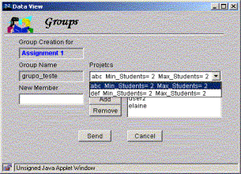

Computadores
no Ensino - Uma Abordagem voltada para o Suporte aos Professores no
Desenvolvimento de Atividades Didáticas
Dilvan de Abreu Moreira
João Benedito dos Santos Junior
{elaine | dilvan | joao} @icmc.sc.usp.br
Universidade de São Paulo – USP
Instituto de Ciências Matemáticas e de Computação – ICMC
Departamento de Ciências de Computação
e Estatística - SCE
Rua Dr. Carlos Botelho - 1495
Este
trabalho apresenta uma proposta que está centrada no desenvolvimento de um
conjunto de ferramentas, denominado WebCoM, que permita aos professores
gerenciarem a informação produzida pelos estudantes durante a realização das
atividades didáticas de um curso via Internet. Essas ferramentas suportam
atividades como controle de notas, calendários, grupos de estudantes, entrega
de trabalhos, dentre outras. Em adição, as ferramentas oferecem também o
suporte aos estudantes através de mecanismos de interação com as atividades do
curso, definidas pelo professor. As ferramentas são baseadas no conceito de
agentes de software e encontram-se fundamentadas no princípio do isolamento de
professores e estudantes das tarefas de baixo nível do gerenciamento de um
curso via Internet, como é o caso do acesso às bases de dados e ao volume de
documentos gerado durante o curso.
1 Introdução
A aplicação da informática na educação
tem sido alvo de intensas pesquisas devido à importância da utilização de
ferramentas computacionais no apoio ao processo de ensino-aprendizagem
(Greenfield, 1987).
Inicialmente, o que caracterizava o uso
da informática na educação era a visão de que os computadores gerariam aumento
da produtividade, promovendo o ensino a um grande número de pessoas dentro de
um pequeno período de tempo. Atualmente, o uso dos computadores na educação é
enfatizado pelo seu alto potencial para o desenvolvimento de habilidades
cognitivas essenciais para incrementar os processos de ensino, aprendizagem e
treinamento.
Apesar de todos os recursos providos
pelos computadores, o seu uso em ambientes de ensino ainda encontra
resistências em virtude de um processo tradicional envolvendo o relacionamento
direto entre professor e estudante num ambiente caracterizado basicamente por
salas de aula, lousa e giz. Tais resistências têm sido minimizadas à medida que
o computador passa a ser visto como um instrumento facilitador do acesso à
informação, sendo um parceiro para o professor e não seu substituto.
Neste contexto, este trabalho apresenta a
proposta de um conjunto de ferramentas de apoio ao professor em um ambiente de
ensino, tendo como objetivo principal fornecer suporte ao gerenciamento das
informações geradas durante as atividades didáticas de um curso, tais como
controle de estudantes, trabalhos, notas, calendários, dentre outras,
utilizando-se da Internet como infra-estrutura de comunicação.
2 A informática em ambientes
de ensino
Atualmente existem duas categorias bem definidas de aplicação dos computadores em ambientes de ensino (Barker,1992):
·
aprendizado assistido por computador (Computer Aided Learning - CAL) que focaliza o uso dos computadores
como ferramenta para promoção do aprendizado, sendo o computador visto como um
agente que, inserido em ambientes de ensino, promove uma nova forma de
transmissão de conteúdos;
Segundo Valente (Valente, 1999), a implantação do computador em ambientes de ensino envolve basicamente quatro componentes: o computador, o software, o professor capacitado para usar o computador como meio educacional e o estudante. A forma como estes componentes se relacionam favorece a classificação dos sistemas educativos.
Uma das formas de se classificar software educacional é a maneira como o conhecimento é manipulado: geração de conhecimento, disseminação de conhecimento e gerenciamento da informação (Knezek, Rachlin e Scannell, 1988). Esta classificação é bastante semelhante à classificação de Taylor (Taylor, 1980), que divide os software educativos em: tutor (o software que monitora o estudante durante um curso), tutorado (software que permite ao estudante representar o seu conhecimento através do computador) e ferramenta (software que permite a manipulação da informação).
Dentre as várias formas de
aplicação dos computadores na educação, destacam-se (Valente, 1999):
Atualmente, a grande maioria
dos sistemas educacionais, que envolvem os três tipos básicos sugeridos por
Taylor (Taylor, 1980), é projetada para ser executada sobre uma plataforma
universal – a Internet. A Internet tem contribuído para a aplicação da
informática na educação e para o desenvolvimento de aplicações em Educação à
Distância, através do ambiente WWW (World
Wide Web) (Lucena,1997).
2.1 A Internet e
suas aplicações em ambientes de ensino
O ambiente WWW da Internet tem sido
reconhecido como um poderoso meio de distribuição de informação, principalmente
por atrair um grande número de usuários, além de ser um serviço de baixo custo,
tanto para a produção quanto para o acesso a seus hiperdocumentos.
De modo especial, o ambiente WWW tem sido
largamente explorado na construção de aplicações para ambientes de
ensino-aprendizagem onde professores e estudantes interagem durante a
realização de um curso. O uso do ambiente WWW na educação torna-se ainda mais
atraente frente à possibilidade de inserção de recursos multimídia que
incrementam o processo de ensino-aprendizagem (Keegan, 1996).
No mundo acadêmico, várias
ferramentas e ambientes têm sido desenvolvidos com o objetivo de apoiar a
aplicação das tecnologias da informação na educação, tais como os ambientes WebCT
(WebCT, 1999), AulaNet (AulaNet, 1998), TopClass (TopClass, 1999), Virtu@ula
(Pimentel, Santos Jr. & Fortes, 1998; Santos Jr, 1998), WebCourse (Scapin
& Garcia Neto, 1997), dentre outras. Além do ambiente WWW, vários outros
serviços disponíveis através da Internet têm sido utilizados em ambientes de
ensino, tais como o e-mail e ferramentas para transferência de arquivos usando
FTP (File Transfer Protocol).
Apesar da Internet ter um alto potencial
para aplicação em Educação a Distância, seus serviços e infra-estrutura podem
também ser aplicados em ambientes de ensino presencial como ferramenta
complementar ao processo ensino-aprendizagem. Este trabalho faz uso desta
característica para apresentar uma forma de facilitar o trabalho do professor
durante o gerenciamento das atividades desenvolvidas por ele e pelos estudantes
em um determinado curso, tarefas essas aqui denominadas “tarefas didáticas”.
4 Ferramentas de apoio ao gerenciamento de atividades didáticas
Durante a realização de um
curso, várias atividades didáticas são conduzidas com o envolvimento de
diversos atores da comunidade do curso: professores (ou administradores),
estudantes e monitores. Várias informações produzidas por essas atividades
devem ser coletadas e disponibilizadas para uso dessa comunidade. Essas
informações são utilizadas para avaliação do trabalho, feedback para os estudantes, ponto de partida para novas atividades
e outras funções. De modo geral, esse volume de informações tende a ser alto e
sua manipulação, muitas vezes, pode levar a uma sobrecarga de trabalho para o
professor responsável pelo curso.
A proposta deste projeto é tornar
facilitada a tarefa de gerenciamento dessas informações, através da
caracterização das principais atividades envolvidas na realização de um curso e
do desenvolvimento de programas para automatizar a execução dessas atividades.
As ferramentas desenvolvidas no contexto deste trabalho visam implementar
mecanismos que facilitem ao professor a definição e controle de atividades e a
criação de ambientes personalizados para a realização de um curso. Além disso,
são oferecidas ao estudantes ferramentas que facilitem sua interação o ambiente
definido para o curso. Em adição, ao utilizar o conjunto de ferramentas
proposto neste trabalho, os usuários podem se concentrar na parte estrutural e
organizacional do gerenciamento de atividades didáticas, deixando as tarefas de
baixo nível para o computador.
O conjunto de ferramentas proposto
neste trabalho, denominado WebCoM, foi projetado observando-se o conceito de
agentes de software e sob a visão dos agentes assistentes (Franklin &
Graesser, 1996; Moreira & Walczowski, 1997), que podem ser caracterizados
como agentes que executam tarefas para um ser humano.
Depois de analisar e avaliar os
procedimentos mais comuns em um ambiente de ensino baseado em salas de aula, um
conjunto de atividades foi selecionado como base para a implementação do
ambiente WebCoM. Estas atividades são:
·
Assignments
(no português - missões): são tipos
de atividades que permitem a realização de trabalhos em grupo de estudantes.
Cada assignment é composto por um ou
vários projetos que podem ser atividades de pesquisas bibliográficas, trabalhos
de desenvolvimento ou realização de experiências, dependendo do tipo de curso
que está sendo gerenciado. Cada projeto de um assignment pode ser feito por um ou mais grupos. Os resultados
obtidos devem ser uploaded para o site do curso para que possam ser
visitados por outros usuários interessados. Para este tipo de atividade, o
professor tem ainda a possibilidade de “induzir” a cooperação entre os
estudantes, utilizando para isto o mecanismo de revisão (reviews). Neste mecanismo, os trabalhos são trocados entre os
grupos de estudantes e cada grupo deve avaliar os resultados do outro. Depois
disso, uma seção de debate deve ser realizada para que o grupo revisor aponte
os problemas encontrados nos resultados do grupo revisado, enquanto este último
se defende e apresenta novas soluções.
·
Reports
(no português - relatórios): são trabalhos realizados individualmente que
também devem gerar relatórios (que são uploaded
para o site do curso). Estas
atividades podem ser as mesmas desenvolvidas na atividade assignment, porém sem a formação de grupos e sem os mecanismos de
revisões. Os reports também podem ser
avaliações que o estudante recebe para serem feitas em casa e, posteriormente,
entregues ao professor.
·
Tests
(no português - avaliações): envolvem as
atividades individuais que podem ser definidas pelo professor, como por
exemplo, avaliações ou exercícios, que não geram uploads para o site do
curso, mas que devem ter notas associadas a elas, sendo consideradas no
gerenciamento.
As ferramentas foram projetadas com base
nestes três tipos de atividades, sendo que o processo de gerenciamento
inicia-se quando o professor (inicialmente administrador) cria o seu ambiente
de gerenciamento de acordo com seu plano de atividades.
As Figuras
1a, 1b, 1c e 1d apresentam
interfaces da ferramenta de criação do ambiente, nas quais pode-se observar que
o professor tem a possibilidade de definir informações específicas do curso
(como data de início e local onde serão armazenados os trabalhos dos
estudantes), tipos e quantidades de atividades, informações sobre as atividades
e conceitos que serão aplicados às notas dos estudantes.
|
|
|
(a) (b)
|
|
|
(c) (d)
Figura 1: (a) Interface para a definição das
informações básicas sobre o curso a ser gerenciado
(b) Interface para a definição dos tipos e
quantidade das atividades do curso
(c) Interface para a definição das
propriedades de uma atividade assignment
(d) Interface para a definição de conceitos
Após criar o ambiente, o professor
deve criar as turmas (uma ou mais), colocando para isto a data para limite de
cadastro e também a data em que o acesso pelos estudantes desta turma será
bloqueado, para que antigos estudantes não tenham mais acesso às ferramentas.
Então, o professor faz o cadastro dos usuários, que podem ser novos
administradores, monitores ou estudantes. As Figuras 2a e 2b
apresentam interfaces para cadastro do estudante e do monitor, nas quais
pode-se observar as diferenças entre essas entidades.
Depois de cadastrado, o estudante recebe,
por e-mail, informações de validação para utilização das ferramentas do sistema.
O estudante tem à sua disposição
ferramentas que permitem a edição de suas informações pessoais; a transferência
de arquivos para a entrega dos resultados obtidos nos trabalhos; a formação de
grupos de trabalhos; a alteração de senhas; a visualização de notas; o acesso
aos trabalhos realizados durante o curso; e o acesso ao calendário de
atividades definidas pelo professor.
|
|
|
(a) (b)
Figura
2 – (a) Interface para cadastro de
estudante em uma turma do curso
(b) Interface para cadastro de monitores para
o curso
|
|
 |
(a) (b)
Figura
03 – (a) Interface para alteração de senhas
(b) Interface para criação de grupos de trabalho
As Figura
3a e 3b apresentam interfaces de
ferramentas para alteração de senhas pelo estudante e para manipulação de
grupos de trabalho.
As Figuras
4a e 4b apresentam interfaces
nas quais o estudante tem acesso às notas obtidas em cada atividade e aos
trabalhos desenvolvidos no curso, bem como aos endereços de e-mail e homepage de todos estudantes.
Imediatamente após a entrega de um trabalho, utilizando uma das ferramentas de
transferência de arquivos oferecidas, os trabalhos ficam disponíveis para serem
acessados.
|
|
|
(a) (b)
Figura
04 – (a) Interface para alteração de senhas
(b) Interface para criação de
grupos de trabalho
As ferramentas do professor formam a base
para as ferramentas do estudante, pois as últimas utilizam informações
produzidas pelo professor, quando da criação do ambiente de gerenciamento, para
controlar as ações dos estudantes. Exemplo disto é o controle sobre a data de
entrega de um trabalho, que é validada sobre a data definida pelo professor e a
data atual, o que impede a entrega de um trabalho fora do prazo estabelecido.
5
Conclusões
Conforme citado, um curso envolve várias
entidades e informações produzidas por estas entidades. A manipulação e a divulgação
dessas informações são tarefas muitas vezes complexas, e que envolvem a
mão-de-obra direta do professor. Utilizando os recursos da Internet é possível
otimizar essas tarefas através de ferramentas específicas de gerenciamento de
atividades, como é o caso das ferramentas implementadas no contexto deste
trabalho.
Com o uso das ferramentas do ambiente
WebCoM, o professor pode se tornar menos sobrecarregado no decorrer de um
curso, economizando tempo em atividades como o controle sobre os grupos de trabalho,
a distribuição das notas aos estudantes (a ferramenta realiza os cálculos tanto
de médias quanto de conceitos aplicados às médias, inclusive com pesos
diferenciados para cada atividade), a divulgação dos resultados do curso em
relação aos trabalhos entregues pelos estudantes, dentre outras atividades.
Este trabalho encontra-se em fase final de
implementação, mas alguns resultados já puderam ser obtidos, quando da
utilização das ferramentas do ambiente WebCoM em cursos oferecidos por um dos
autores deste trabalho (Silva & Moreira, 2000). Embora este trabalho esteja
sendo aplicado como suporte a uma metodologia de um curso do regime presencial
de ensino, o uso das ferramentas pode ser estendido para ambientes de Educação
a Distância.
O desenvolvimento de novas ferramentas que
auxiliem o trabalho cooperativo de estudantes participantes de um curso é
esperado como continuação deste trabalho, bem como a investigação e inserção de
aspectos e parâmetros de consciência de contexto (context-awareness) na definição e execução das tarefas didáticas de
um curso (Abowd, 1999).
Agradecimentos
Agradecimentos especiais à FAPESP
(Fundação de Amparo à Pesquisa do Estado de São Paulo) pelo apoio e
financiamento oferecido ao desenvolvimento deste trabalho.
Referências Bibliográficas
|
(Abowd, 1999) |
ABOWD,
G.D.: Software Engineering Issues for Ubiquitous Computing. Proceedings of International Conference on
Software Engineering (ICSE'99), pp.75-84, 1999-May. |
|
(AulaNet, 1998) |
AULANET. Ajudando
Professores a Fazer seu Dever de Casa. Disponível on-line em http://aulanet.les.inf.puc-rio.br/aulanet. |
|
(Barker,
1992) |
BARKER, P.:
Computer-Based Training: An Institutional Approach. Education & Computing, 1992. |
|
(Franklin,
& Graesser, 1996) |
FRANKLIN
S. & GRAESSER A.: Is it an Agent or just a Program?: A Taxonomy for
Autonomos Agents. Third Workshop on
Agent Theories, Architectures and Languages, 1996. Disponível on-line: http://msci.memphis.edu/~franklin/AgentProg.html. |
|
(Greenfield,
1987) |
Greenfield, P.
M.: Eletronic Technologies, Education, and Cognitive Development. Lawrence
Erlbaum Associates, 1987. |
|
(Keegan,
1996) |
KEEGAN,
D.: The Foundations of the Distance Education. London, ed. Croom Helm, 1996. |
|
(Knezek,
Rachlin e Scannell, 1988) |
KNEZEK,
G.A.; RACHLIN, S.L. and SCANNELL, P.: A Taxonomy for Educational Computing.
Educational Technology, March, 1988. |
|
(Lucena, 1997) |
LUCENA, C.J.P. de:
Curso sobre Sociedade da Informação. Disponível on-line em http://www.les.inf.puc-rio.br |
|
(Moreira
& Walczowski, 1997) |
MOREIRA,
D. A. and WALCZOWSKI, L. T.: Using Software Agents to Generate VLSI Layouts.
IEEE Expert Intelligent Systems, p.26-32. Novembro/dezembro de 1997. |
|
(Pimentel, Santos Jr. & Fortes,
1998) |
PIMENTEL,
M.G.C; SANTOS JR., J.B. dos and FORTES, R.P.M.: Tools for Authoring and
Presenting Structured Teaching Material in the WWW. Proceedings of the
WebNet’98 Conference. Orlando,
USA, November-1998. |
|
(Santos Jr, 1998) |
SANTOS JR, J.B. dos.: Documentos Estruturados para o
Domínio de Aplicação Ensino: Modelagem, Autoria e Apresentação no Ambiente
WWW. São Carlos, 1998. Dissertação (Mestrado) - Instituto de Ciências Matemáticas
e de Computação, Universidade de São Paulo. |
|
(Scapin & Garcia
Neto, 1997) |
SCAPIN, R. H. e GARCIA
NETO, A.: Desenvolvimento de uma Ferramenta para Criação e Correção
Automática de Provas na World Wide Web. Anais do VIII Simpósio Brasileiro de
Informática na Educação, v.1, p.593-608. São José dos Campos, novembro de
1997. |
|
(Silva
& Moreira, 2000) |
Silva,
E. Q. da & Moreira, D. A.: Use of Software Agents to Management of the
Distance Education Courses over the Internet. Proceedings of ICECE’2000. São Paulo, Brasil, August-2000. |
|
(Taylor, 1980) |
TAYLOR,
R.P.: The Computer in the School: Tutor, Tool, Tutee. Teachers College Press,
New York, 1980. |
|
(TopClass,
1999) |
TOPCLASS
HomePage. Disponível on-line em http: //www
.wbtsystems.com |
|
(Valente, 1999) |
VALENTE, J. A.: Diferentes usos do Computador na Educação. Disponível on-line, http://www.proinfo.br. Visitado em dezembro de 1999. |
|
(WebCT,
1999) |
WEBCT
Homepage. Disponível on-line em http://homebrew1.cs.ubc.ca/webct |